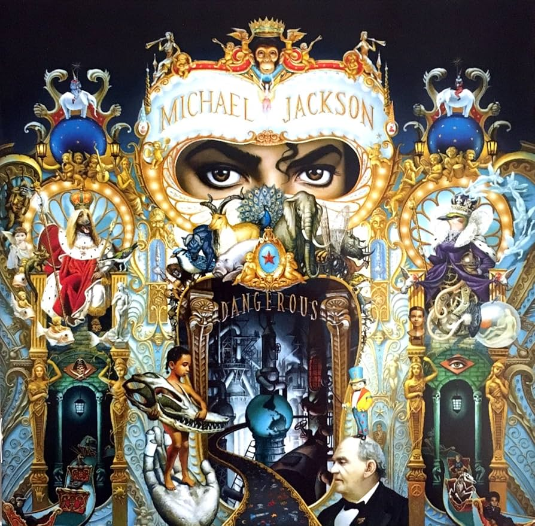

Ha vendido 32 millones de copias en el mundo, lo que lo convierte en uno de los más vendidos de la historia. Dangerous es considerado el álbum más personal del cantante, ya que se expresa con mayor libertad creativa. Entre los géneros musicales se encuentra el hard rock («Black or White» y «Give In to Me»); soul o funk que se fusiona con dance o hip hop (fusión llamada new jack swing) en canciones como «Remember the Time», «Jam», «Dangerous», y el góspel en «Will You Be There» o «Keep the Faith».
El propio Jackson escribió cuatro de las nueve canciones del álbum.Las sesiones de grabación iniciaron en abril de 1982 en los estudios Westlake de Los Ángeles,con un presupuesto de producción de US$750 000.El disco contó con la colaboración de Paul McCartney, exmiembro de The Beatles, además de varios integrantes de la banda de rock Toto, entre ellos Jeff Porcaro (batería), Steve Porcaro y David Paich (teclados), Steve Lukather (guitarra) y el teclista Greg Phillinganes.
Bad incorpora estilos de pop, dance, R&B, funk, soul, rock y hard rock, e incorporó nueva tecnología de grabación, incluidos sintetizadores digitales. Jackson adoptó una imagen y un sonido más atrevidos, alejándose de su característico estilo basado en el ritmo y el falsete. Jackson coprodujo y compuso todas las canciones excepto dos, ya que los temas líricos incluyen la superación personal, el romance, la paz mundial, el sesgo de los medios, la paranoia y la discriminación racial. El álbum cuenta con apariciones de Siedah Garrett y Stevie Wonder.